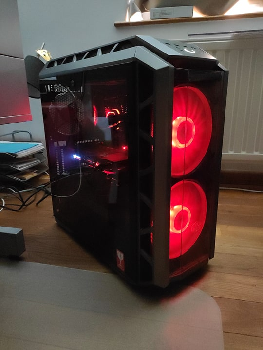

Sciensano
Sciensano est le produit de la fusion récente entre l'Institut Scientifique de Santé Publique (ISP) ainsi que du Centre d’Étude et de Recherches Vétérinaires et Agrochimiques.
Sciensano fut mon premier job d'étudiant dans la sphère de l'informatique.
J'y ai passé quelques mois, étalé sur plusieurs années, et ce, dans différents services.
Environnement
J'ai essentiellement exercé mes jobs d'étudiants dans le service IT, plus spécifiquement dans le service Helpdesk.
Et j'y ai découvert plusieurs équipes composé de gens formidables. Travailler avec eux a été un véritable plaisir.
Cependant, chaque service avait sa propre ambiance, ce qui ne m'a pas empecher de m'y intégrer très facilement.

Quelques chiffres ...
Activités
Durant mes différents job d'étudiants à Sciensano, j'ai pu travailler dans différents services, notamment HR, IT, Dispatching.
Au cours de ces différentes missions, j'ai essentiellement travaillé pour le coté Helpdesk du service IT.
J'y effectuais différentes tâches très variées tel que la préparation des laptops pour les différents services, l'installation des desktops des nouveaux employés et de manière plus générale, je répondais aux diverses requêtes (tickets) émanant des autres services.
Evidemment on y parlait néérlandais, anglais et français, ce qui me permit de recupérer le néérlandais que j'avais quelque peu perdu.

ISP & CERVA = Sciensano
Enseignement
Cette expérience fut très enrichissante en enseignement autant du point de vue de la vie en entreprise que des connaissances en informatique.
Si certaines de mes missions comme du classement ou encore la gestion de stock, étaient moins captivantes que d'autres.
Je suis content d'avoir pu travailler dans différents services car cela m'a permit de rencontrer des gens formidables d'une part et de l'autre d'avoir une vue plus globale quant au fonctionnement de l'entreprise, en comprendre ces rouages plus en profondeur.
Wirehack
Hackaton accompagné par Immoweb et Deloitte
Ce hackaton fut mon premier (et le seul jusqu'a présent) et s'est déroulé durant un weekend à Bruxelles.
J'y ai participé avec quelques amis par pure curiosité.
Le thême de l'activité était "Le batiment" et son but était de développer et mettre en place un micro-projet en lien avec le theme en moins de deux jours.
Samedi, nous avons créé des groupes, brainstormé, choisi les projets les plus intéressants et commencé à travailler dessus.
Wirehack edition 2018 !
J'ai choisi un projet dont le but était d'utiliser la technologie du blockchain pour stocker et sécuriser l'ensemble des information d'un batiment tel que
- l'historique de ses travaux de rénovations, réparations,
- ses scores énergétiques,
- revues et commentaires,
- l'historique des propriétaires,
- etc.
2 ans plus tard j'ai toujours l'impression que cette idée était prometteuse. Malheureusement, la technologie du blockchain était en dehors de nos compétences de l'époque, nous qui venions à peine de rentrer en Bac 2.
Le projet n'a pas abouti et nous ne l'avons défendu que théoriquement, sans rien de fonctionnel.

Les locaux

Attestation de participation
Meme si l'ambiance était assez bonne, mon expérience à ce hackaton a été ternie par un membre assez oppressant tout au long du weekend.
Autre point noir, les groupes étaient très mal répartis en matière de compétences en informatique (certains faisaient des masters, d'autres n'étaient même pas en informatique, ...)
Selon moi je n'étais pas encore réellement près pour un nouvel hackaton après ce dernier.
Cela dit, étant maintenant en BAC3, je retenterais bien l'expérience, qui sait ?
Conférences
Au cours de mon bachelier j'ai pu participer à quelques conférences ainsi que présentations comme par exemple le DevDay, des présentations de la société Odoo, une conférence organisée par le Cercle francophone des Décideurs des technologies du Numérique, des activités internes à l'EPHEC (FREE) ...
La conférence organisée par le CfDtN (Cercle francophone des Décideurs des technologies du Numérique) m'a permis de rencontrer de nombreuses personnes travaillant dans le domaine de l'informatique.
J'y ai appris un grand nombre de choses tel que l'état actuel des entreprises travaillant partiellement, voir totalement dans le domaine de l'informatique.
Mais aussi les compétences recherchées par l'employeurs, les softs skills, ...
Cette rencontre avec les professionels du métier ainsi que d'autres étudiants (UCL) me permit d'avoir une vision plus complète de la période post-étude.

Cercle du Numérique

Devday
Odoo
Grâce à la présentation d'Odoo j'ai pu avoir un aperçu interne d'un société 100% informatique, cependant je regrette le fait qu'il n'y a pas une plus grande diversité des entreprises faisant leur promotion au sein de l'EPHEC. Au lieu d'avoir 2 présentations, j'aurais aimé voir une seconde entreprise. Quoi qu'il en soit, cette présentation fut toujours intéressante car présentait un cas concret d'entreprise.
Devday
Le Devday a amené un grand nombre de themes divers particulièrement intéressants. J'ai fait le choix d'aller à celles qui me parlaient le plus (intelligence artificielle notamment), ce que, avec le recul, je regrette un peu. J'aurais du profiter de cette opportunité pour assister à des présentations abordants des sujets que je maitrise moins, voir pas du tout.Finalement, j'ai trouvé les présentations très intéressantes mais j'ai souvent été perdus durant ces dernières. A mon humble avis ce genre de conférente est réservée à un public plus averti, expérimenté que je ne l'étais à ce moment là.
Meilleur ...
En début de BAC3, un voyage a Malte a été organisé et j'ai rejoins un groupe de 5 étudiants que je ne connaissais pas, pour la plupart.
Ce groupe avait une bonne dynamique et je me suis très rapidement intégré à ce dernier.
Une fois sur place il nous a fallu nous organiser (notamment pour les courses, les activités ainsi que la question de la mobilité).
Etant arrivé quelques jours plus tot nous avons eu l'opportunité de planifier différentes activités en plus de celles organisée par l'EPHEC.
Durant toute la durée du séjour, nous avons parlé anglais à l'extérieur ce qui était un très bon exercice en situation réelle.

... voyage ...
... EVER !!!

En ce qui concerne les activités organisées par l'EPHEC, je retiens surtout la présentation de l'entreprise de cyber-sécurité PwC. Elle était très intéressante et abordable avec notre niveau. L'équipe qui présentait l'entreprise était jeune et savait comment capter notre attention.
En résumé
C'était, pour moi, la première fois que je partais aussi loin avec un groupe de cette taille et ce fut toute une expérience. Nous avions une bonne cohésion de groupe, les activités étaient relativement bien organisés et riches en contenu et de plus, on c'est bien amusé sur le coté.On me reproposerait le voyage, je ne dirait pas non.

Une dernière pour la route ?
Sololearn
Git
Mon certificat de formation Python
L'après formation
Dans le cadre de mon TFE ainsi que de mon stage, j'ai été amené à travailler en Python.
Je l'avais déjà pratiqué quelques temps auparavant mais plus depuis mon entrée à l'EPHEC.
Pour me remettre sur les rails j'ai donc décidé de suivre une formation sur l'application mobile Sololearn.
Je n'ai pas eu trop de mal à me remettre dans le bain, Python étant un langage assez simple de par sa syntaxe.
Cette formation m'a notamment appris l'orienté objet, notion que je n'avais pas encore acquise dans ce langage.
J'ai aussi suivi d'autres formations sur cette application tel que Java, C++ ou encore le C, mais n'en ai terminé aucune parmi ces dernières.
Sololearn a une approche plus orienté marketing que d'autres formations avec une communauté, un système de défi, etc, ce qui, je trouve, est un avantage.
J'ai trouvé cette application très utile pour commencer à apprendre un nouveau langage ou (dans mon cas) se remettre à jour.
Cependant je ne baserais pas entierement l'apprentissage d'un langage dessus, la formation reste très théorique malgré le nombre conséquent d'exercices.

Mes autres formations
Dans le courant de ma seconde année à l'EPHEC, j'ai participé à une formation Github avec plusieurs étudiants de l'EPHEC.
Je ne suis pas un très grand utilisateurs de git, c'est d'ailleurs l'une de mes faiblesses les plus flagrante.
J'ai donc participé à cette formation dans le but de mieux comprendre l'outil. J'y ai appris à utiliser git desktop ainsi que les commandes de bases.
La formation était simple à comprendre et très bien expliquée. Je n'ai malheureusement pas eu l'occasion de m'y mettre sérieusement dans mon travail journalier.
Pour les projets de groupes, j'utilise encore principalement github et en ce qui concerne les projets personnels, je continue de travailler en local, ce qui, je sais, n'est pas très conseillé.
Construire sa propre tour
Pour palier à mon laptop se faisant vieux, je décide d'investir dans du matériel puissant et neuf.
Les débuts
Ne connaissant rien en montage d'ordinateur, je me suis donc renseigné sur le sujet durant les 2 mois de mon job d'étudiant.J'ai commencé par suivre des tutoriels de montages. Je me suis inscrit sur des groupes d'hardware. J'ai commencé à sélectionner mes composants en ligne tout en demandant l'avis de la communauté quant à l'équilibrage de ces derniers et éviter ainsi d'avoir des composants qui limiteraient les performances de la configuration générale.
Contexte
Il va sans dire que les études d'informatique ne peuvent se passer de matériel informatique.
Je viens de finir ma première année à l'EPHEC et mon laptop commençait à atteindre ces limites.
Je décide donc d'investir dans un dekstop assez puissant pour ne pas être dépassé d'ici quelques années et disposant d'une puissance de calcul intéressante pour l'entrainement d'IA.
Pour financer ce projet j'ai donc décroché un job d'étudiant d'une durée de 2 mois à Sciensano.
Ne partant de rien, il me fallait un setup complet (composants d'ordinateur mais aussi écran, clavier, casque, ...)


Une fois la configuration ai été la plus optimisé possible. L'argent de mon job d'étudiant me permis de passer commande d'une traite, il ne restait plus que le montage.
Le montage m'a pris une bonne partie de la journée : entre le déballage, les précautions prises car je me sais parfois très maladroit, l'installation des composants puis de windows.
Le premier démarrage c'est passé sans accro, se dont je suis personnellement très fier. Léger détail : j'ai du rebrancher quelques cables car le coté RGB ne fonctionnait pas sur certains ventilateurs.
Retour d'expérience
Ce fut un chouette projet, finançé et entierement réalisé de manière 100% autonome et sans aucun problème tout du long. Je suis très fier du résultat accompli. J'en suis ressorti avec une plus grande confiance en mes capacités et un nouveau domaine de connaissances.Depuis la fin de ce projet, j'ai arreté de m'interesser à l'hardware mais mon TFE, grandement dépendant des cartes graphiques m'y a ramené. Il n'est pas impossible que dans le futur je fasse un nouvel investissement (carte graphique) pour améliorer les performances lié à l'entrainement des IA.
Tableau récapitulatif
Résumé de l'ensemble des activités
{kind=link}
{kind=link}
{kind=link}